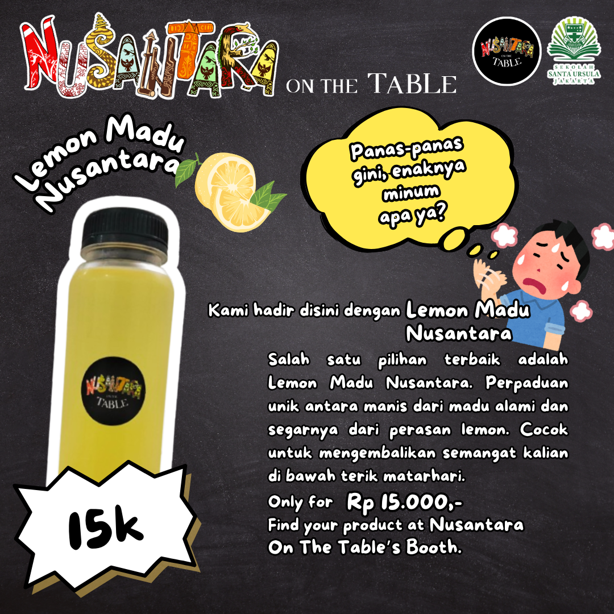
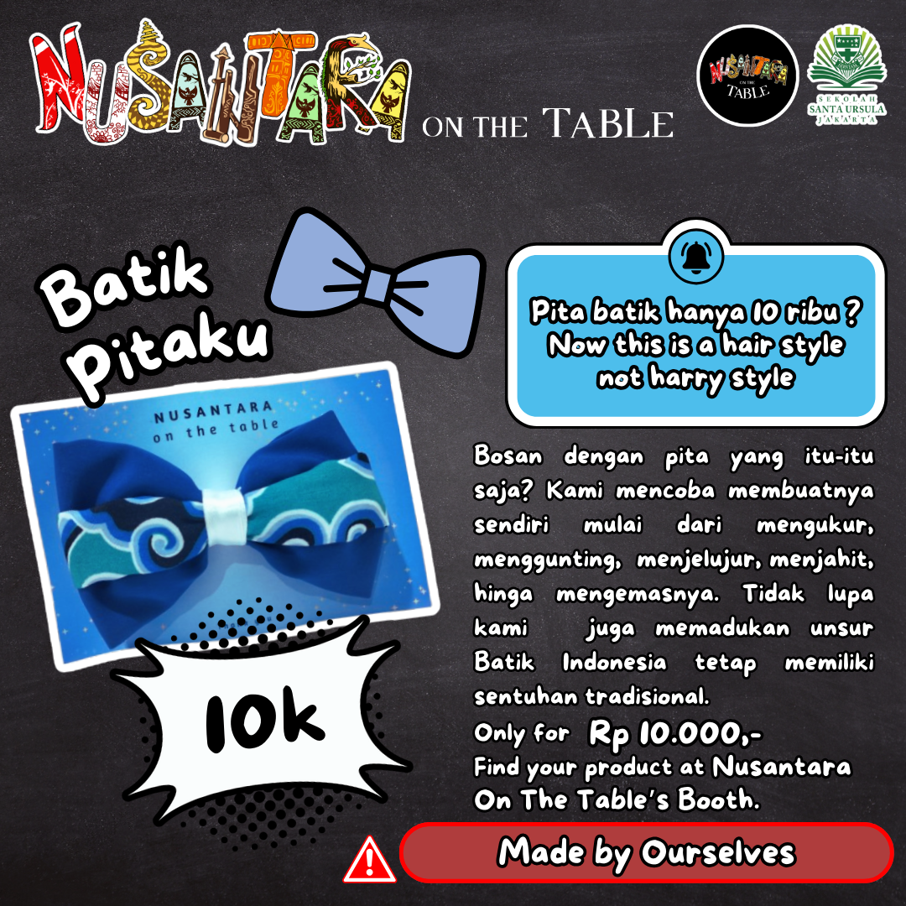
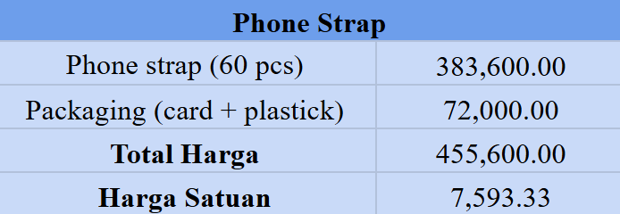

Kelompok kami merencanakan untuk menjual produk yang berkualitas, memiliki harga yang terjangkau, dan sesuai dengan tema ‘Nusantara’. Prinsip kelompok kami adalah mengemas produk kebudayaan Indonesia menjadi hal yang modern dan menarik. Saat perencanaan kami menentukan untuk menjual tiga makanan, tiga minuman, dan empat barang. Saat perencanaan, kami menetapkan untuk resale beberapa produk yang akan kami jual, dengan pertimbangan harga dan juga ongkir. Dengan berjalannya waktu, produk-produk yang kami jual tidak mengalami banyak perubahan. Kami juga telah menghitung incaran harga yang akan kami tetapkan.
MINUMAN

Kami memilih untuk menjual jus markisa dengan nama “Medan Markisa Ria”, lemon madu dengan nama “Lemon Madu Nusantara”, dan jahe susu dengan nama “Es Rempah Jahe Susu”. Kami mencoba terlebih dahulu minuman-minuman yang telah kami buat dan memastikan agar rasanya enak dan cukup menyegarkan.
Medan Markisa Ria
Medan Markisa Ria merupakan minuman yang terbuat dari jus markisa yang ditambahkan sedikit gula dan biji selasih. Minuman ini memiliki rasa yang manis serta menyegarkan. Kami menjualnya dengan harga yang terjangkau yaitu hanya Rp 15.000,-. Banyak orang yang menyukai dan membeli Medan Markisa Ria karena rasanya yang enak dan memiliki harga yang murah. Tentunya, kami menggunakan jus markisa asli tanpa pemanis buatan sehingga memiliki rasa asam manis yang alami.
Lemon Madu Nusantara

Lemon Madu Nusantara merupakan minuman yang terbuat dari perasan lemon yang ditambahkan dengan madu. Minuman ini memiliki rasa asam manis yang cukup banyak diminati. Banyak pembeli yang tertarik untuk membeli Lemon Madu Nusantara karena memberikan sensasi yang menyegarkan di tengah panasnya matahari. Kami menjual minuman ini hanya Rp 15.000,- dengan lemon asli yang berkualitas.
Es Rempah Jahe Susu
Es Rempah Jahe Susu merupakan minuman tradisional yang menggunakan jahe sebagai bahan utamanya dan ditambahkan dengan susu kental manis. Minuman ini memiliki rasa yang sedikit manis tetapi tidak mengurangi rasa pada jahe tersebut. Kami menentukan untuk menjual minuman ini karena jahe memiliki manfaat dalam menjaga kesehatan jantung, meningkatkan daya tahan tubuh, menurunkan risiko berbagai penyakit, dan masih banyak yang lainnya. Sebagian besar yang membeli Es Rempah Jahe Susu tersebut merupakan orang tua. Kami menjualnya dengan harga Rp 15.000,- yang terbuat dari jahe asli yang berkhasiat.
MAKANAN

Kami memilih untuk menjual ubi cilembu dengan nama “Cilembu Creme Brulee”, serabi dengan es krim yang diberi nama “Serabi Lumer”, dan gado-gado yang digulung menjadi seperti kimbap dengan nama “Gado-Gado Roll”. Makanan-makanan kami yang unik dan menarik untuk menjadi daya tarik para pembeli.
Cilembu Creme Brulee
Cilembu Creme Brulee merupakan makanan yang kami jual berupa ubi cilembu yang telah dipanggang selama 2 jam. Memiliki rasa manis gula dibakar dan sangat enak untuk dikonsumsi dalam kondisi yang hangat. Ubi ini kami jual dengan harga murah yaitu hanya Rp 20.000,- yang memiliki rasa manis alami. Tidak perlu pergi jauh-jauh ke Jepang, kami menjualnya dengan harga murah dan rasa yang enak.
Serabi Lumer

Serabi Lumer merupakan makanan yang kami jual berupa serabi yang dipadukan dengan es krim rasa vanilla di atasnya. Serabi Lumer ini merupakan satu-satunya makanan yang kami jual secara resale. Kami membeli serabi dan es krim yang sudah jadi dan memasukkannya ke dalam kemasan yang sudah kami sediakan. Kami meletakkan es krim vanilla di atas serabi tersebut untuk dijual. Serabi Lumer sangat banyak diminati karena rasanya yang manis serta memberikan sensasi dingin yang cocok dikonsumsi saat cuaca panas. Kami menjual Serabi Lumer dengan harga Rp 20.000.- dengan tekstur yang lembut.
Gado-Gado Roll
Gado-Gado Roll merupakan makanan yang kami jual berupa nasi dan seaweed (rumput laut) yang digulung bersamaan dengan wortel, tempe, bayam, timun. Gado-Gado Roll ini juga dipadukan dengan bumbu kacang yang enak dan gurih. Memiliki bentuk yang mirip dengan sushi yang dapat dilihat pada bagian luarnya, tetapi memiliki isi seperti gado-gado. Kami menjualnya dengan harga Rp 25.000,- dengan isi 5 pcs setiap satu kemasan.
BARANG
Produk-produk yang kami pilih merupakan pemenuhan nilai mata pelajaran IPA, Kesenian, dan PPKn. Produk tersebut terdapat tiga yaitu Postcard, Batik Pitaku, Aromatic Hand Soap, serta Phone Strap sebagai produk tambahan.
Nusantara Postcard
Nusantara Postcard merupakan pemenuhan nilai PPKn dengan materi Nilai Tenggang Rasa, Toleransi, dan Kolaborasi dalam Budaya Indonesia. Nusantara Postcard merupakan suatu hal yang cukup sederhana, namun dapat berisikan banyak nilai-nilai budaya. Kami membuat 2 jenis postcard, dengan design Batik Kawung dan Batik Buketan.
Batik Buketan merupakan batik asal Pekalongan yang sudah berakulturasi dengan budaya asing. Hasil batik akulturasi ini modern tanpa menghilangkan kekhasan batik Indonesia. Batik ini sangatlah cocok dengan kepribadian seorang sanurian, dimana kita mengutamakan kebahagiaan, kecantikan, kemurnian, dan keceriaan. Nilai-nilai ini selaras dengan karakter SERVIAM, yaitu cinta dan belas kasih, integritas, keberanian dan ketangguhan, persatuan, pelayanan, dan totalitas. Batik Kawung merupakan salah satu batik tertua di Indonesia. Batik ini merupakan batik terpopuler di Jawa Tengah, yang identik dengan motif bulat-bulat yang disusun secara geometris.
Aromatic Hand Soap
Aromatic Hand Soap merupakan produk untuk pemenuhan nilai Ilmu Pengetahuan Alam dengan sebagai teknologi ramah lingkungan. Sabun yang kami buat memiliki 2 varian yaitu dengan wangi lemon dan sereh. Kami mengetahui bahwa daya jual barang ini tidak akan terlalu tinggi maka kami hanya membuat 26 pcs. Ketika kami melakukan percobaannya, kami menemukan beberapa kegagalan. Namun, pada akhirnya kami berhasil membuat sabun ini berdasarkan perencanaan kami.
Pita Batikku
Batik Pitakku merupakan produk pemenuhan nilai Kesenian dengan materi menjahit. Pembuatan pita ini sedikit berbeda dengan perencanaan yang kami buat. Kami membuat 47 pita dengan 26 pcs dengan batik tosca dan 17 pcs dengan batik biru. Kami menggunakan kain bermotif Batik Mega Mendung sebagai bahan pita kami. Hasil pita kami sangat bagus, kami pun membuatnya sendiri, dan juga pita tersebut menjadi suatu hal yang tetap menonjolkan budaya Indonesia namun dikemas dengan cara yang modern.
Phone Strap
Kami pilih untuk menjual phone strap karena kami ketahui bahwa nilai jual phone strap tinggi. Phone strap merupakan satu satunya barang yang kami resale. Harga jual phone strap yang murah juga menjadi daya jual yang tinggi. Kami memilih motif phone strap yang lucu dan menarik serta memiliki harga jual yang murah untuk meningkatkan daya minat para pembeli. Phone strap yang kami jual ini multifungsi karena dapat dijadikan sebagai hiasan sekaligus gantungan pada ponsel.
Kami membuat poster dan katalog untuk mempromosikan produk-produk yang kami jual. Kami mempromosikannya melalui akun instagram yang kami buat @nusantaraontt, di sana kami posting beberapa foto-foto dan juga video promosi.
Poster Produk

Kami membuat poster yang berisi seluruh produk yang kami jual beserta harganya. Kami juga cantumkan nama kelompok kami dengan logo kelompok dan logo sekolah, serta narahubung dan akun instagram kelompok kami. Kami juga sertakan slogan kelompok kami, yaitu “Serasa Tradisi, Nikmatnya Sejati”. Poster ini kami buat sebagai bahan promosi utama kelompok kami. Kami mendesain poster yang menarik dengan menyajikan foto-foto aktual dari setiap produk agar para konsumen dapat melihat barangnya dan tidak mengecewakan ketika melihat aslinya.
Katalog
Kami membuat katalog untuk setiap produk yang kami jual. Pada katalog kami sertakan nama kelompok, logo kelompok, logo sekolah, dan harga. Kami juga sertakan sedikit penjelasan yang menyampaikan kualitas dan juga kekhasan dari setiap produk. Kami juga sertakan gambar setiap produknya yang cukup besar sehingga jelas dan menarik.
Kami juga membuat akun instagram yang kami gunakan sebagai sarana untuk mempromosikan produk-produk kami. Kami memposting poster berisikan produk-produk kami. Pada story IG, kami juga mengunggah video proses pembuatan produk-produk kami. Kami mengetahui akun ini tidak akan bisa mencapai followers tertentu dalam jangka waktu yang cukup singkat, maka dari itu kami juga memposting story IG pada akun instagram pribadi kami.
Dalam bazar ini dekorasi booth merupakan hal yang penting. Kami mempunyai gambaran untuk menampilkan seluruh barang-barang di meja booth dengan 2 meja disusun seperti letter “L”. Kami membuat sketsa mengenai dekorasi dan penyusunan booth kami. Pada awalnya, kami merencanakan untuk menampilkan backdrop kain hitam dengan tulisan “Nusantara On The Table” namun setelah mengetahui posisi booth kami di sisi aula, kami mengetahui bahwa hal tersebut tidak dapat dilakukan.
Berikut adalah sketsa dari awal perencanaan booth kami. Terdapat lampu dekorasi di depan meja dan juga papan menu yang berisi list produk di samping booth. Kedua meja akan dialasi dengan kain hitam dan seluruh produk akan ditampilkan di atas meja.
Pada satu bulan terakhir kami menemukan inspirasi bagaimana cara penyusunan barang barang di atas meja. Kami juga mempunyai ide untuk meletakan cool box kecil di atas meja dengan banyak es batu agar minuman-minuman kami terlihat segar dan tetap dingin. Kami juga membuat papan nama kelompok untuk dipasang di atas booth kami. Kami juga membeli board untuk sebagai papan untuk memperlihatkan barang-barang yang kami jual.